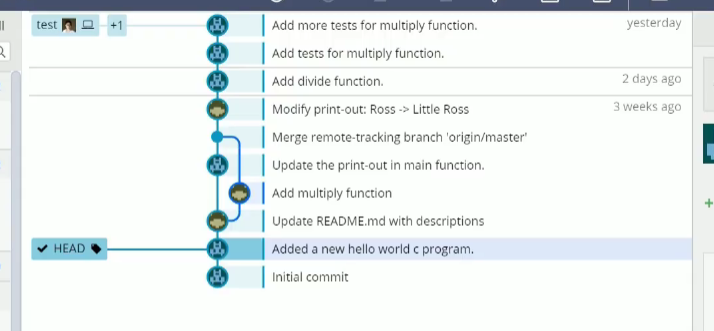

利用Gitkraken了解Git

- huuhghhgyg
- 1 min read

git是版本控制系统。应用最为广泛，适用于中小项目。本身是命令行工具。 GitKraken图形化客户端，界面漂亮，功能全面。
🔗链接
Git的基本概念和操作
代码仓库(Repository)
创建一个代码仓库(Repository)，可以是本地仓库，也可以是保存在远程服务器上的仓库。仓库之间可以相互同步。 显示代码的所有提交历史，其中每项代表一个提交(Commit),提交相当于检查点或者快照。对代码作出修改后可以提交这次修改，Git会保存当前的代码快照，之后可以轻松回溯到这里。 新建代码仓库的时候会自动创建一个提交。 选中提交后可以看到所有修改的文件。
GitKraken 中打开git目录可以点击“文件”-“在文件浏览器中打开”，找到代码仓库在本地计算机上存放的位置
作出更改后文件历史中多出 //WIP (Work In Progress)，代表这个提交正在施工中。
Git要求在提交修改的文件前要对它们先 Stage，点击Stage。Stage可看作提交前防止误操作。其中必填本次提交的描述。最后"Commit"完成提交，这里的提交还是在本地计算机的提交。
如果要远程提交到代码仓库，就需要 “Push"s，推送提交即可。
拉取(Pull)
从远程服务器 拉取(Pull) 提交 提交历史会多出来一条。master和电脑图标的标签表示本地仓库的提交，上面的表示Github上的远程仓库提交（master是分支）。(origin通常代表远程仓库)。如果想把远程提交同步到本地仓库只需要点击**“Pull”**。点击后两个图标重合在一起，代表远程仓库和本地仓库的提交历史已经完全相同。
合并(Merge)
两边同时作出了修改后提交历史会产生分叉 如果想要将两个修改同时应用在本地仓库中，需要合并。Pull的时候会自动合并远程提交到本地的提交中。Pull后Git会自动生成一个新提交。 如果同时修改代码的同一处位置，再次Pull的时候，会自动合并失败，需要手动合并冲突(Conflict)的部分。 下面的窗口用于手动解决冲突 最终完成提交
提交改写(Amend)
用于提交代码有误或者提交信息出错，对已提交的文件和信息进行修改。在提交前勾选Amend后正常提交。这个操作只会修改已经存在的提交。但是最好本地使用。
分支(Branch)
创建一个新分支，点击Branch按钮。创建好后分支的提交历史和原来相同，但是往后的提交会相互独立。默认只会推送master分支到远程服务器，如果要推送其他分支，点右键然后选择Push。
合并分支（Merge Branches）
将test合并到master上，先双击切换到master分支，在test分支上右键点“合并test分支到master分支”。（可能需要手动解决代码冲突）
暂存(Stash)
暂存当前的修改，源代码会被还原到之前的状态，可以进行其他操作。 最后可以通过Pop将暂存的代码恢复出来，甚至可以切换到很老的版本将暂存的修改恢复出来。
变基(Rebase)
在合并分支的过程中，会将整个分支摘取下来，嫁接到另一个分支上（改变了原有的基底）。相比Merge,Merge的优点在于原先的提交历史会被完整地保留下来。 比如将test分支变基到master分支，先选择test分支，右键选择“将test分支变基到master分支上”，完成操作。最后将master分支指向最新的提交，这样master分支的内容才是最新的。（用到Fast Forward)
快进(Fast Forward)
直接让master的指针快进到test分支。
签出(Checkout)
回退到早期的版本完成一些bug的修复。在想要回到的节点上右键点击签出，此时Head标签指向当前提交。  修改完后提交是基于早期的提交,最后可以将其变基到当前的提交上，变基完成后提交会变成一条直线。
撤销操作(Undoing)
常用于在Git中错误提交了代码或者错误合并了一个分支。得益于每次的操作都记录在Reflog的类似日志的文件里，能够帮你轻松回退之前的状态。GitKraken中就是状态栏中的undo操作。包括分支切换、合并、修改甚至删除等等。
恢复(Revert)
常用于撤销已提交的代码（远程）。在GitKraken中在提交上点右键，Git会创建一个完全相反的提交以恢复。
图形化界面对应的命令行命令
第一部分（常用基础部分）
配置基本用户信息
git config --global user.name <用户名>
git config --global user.email <邮箱地址>
创建一个新仓库
git init
从远程服务器克隆一个仓库
git clone <远程仓库url>
显示当前的工作目录下的提交文件的状态
git status
将指定文件Stage（标记为将要被提交的文件）
git add <文件路径>
将指定文件Unstage（取消标记为将要被提交的文件）
git reset <文件路径>
创建一个提交并提供提交信息
git commit -m "提交信息"
显示提交历史（类似GitKraken中间窗口的提交历史）
git log
向远程仓库推送(Push)
git push
从远程仓库拉去(Pull)
git pull
第二部分（基础进阶部分）
修改(Amend)上一个提交
git commit --amend -m <新的提交信息>
查看所有分支
git branch
创建新的分支
git branch <分支名字>
切换分支
git checkoout <分支名字>
重命名分支
git branch -m <旧名字> <新名字>
删除分支
git branch -d <分支名字>
将分支变基(Rebase)到master
注：需要先切换到分支后，再完成变基
git checkout <分支名字>
git rebase master
使用快进(Fast-Forward)将分支合并到master
git checkout <分支名字>
git merge -ff-only master
中止这一次提交的合并（当遇到冲突时）
git merge --abort
将未提交的修改暂存(Stash)
git stach save "<可以输入一个信息>"
将上一个暂存的修改恢复并从暂存列表中删除
git stash pop
签出指定的提交
git checkout <提交的hash>
撤销旧的提交
注：Revert并不会修改旧的提交历史，而是在工作树中生成一个与之前提交完全相反的修改。
git revert <旧提交的hash>
利用reflog查看本地仓库中的所有操作
git reflog